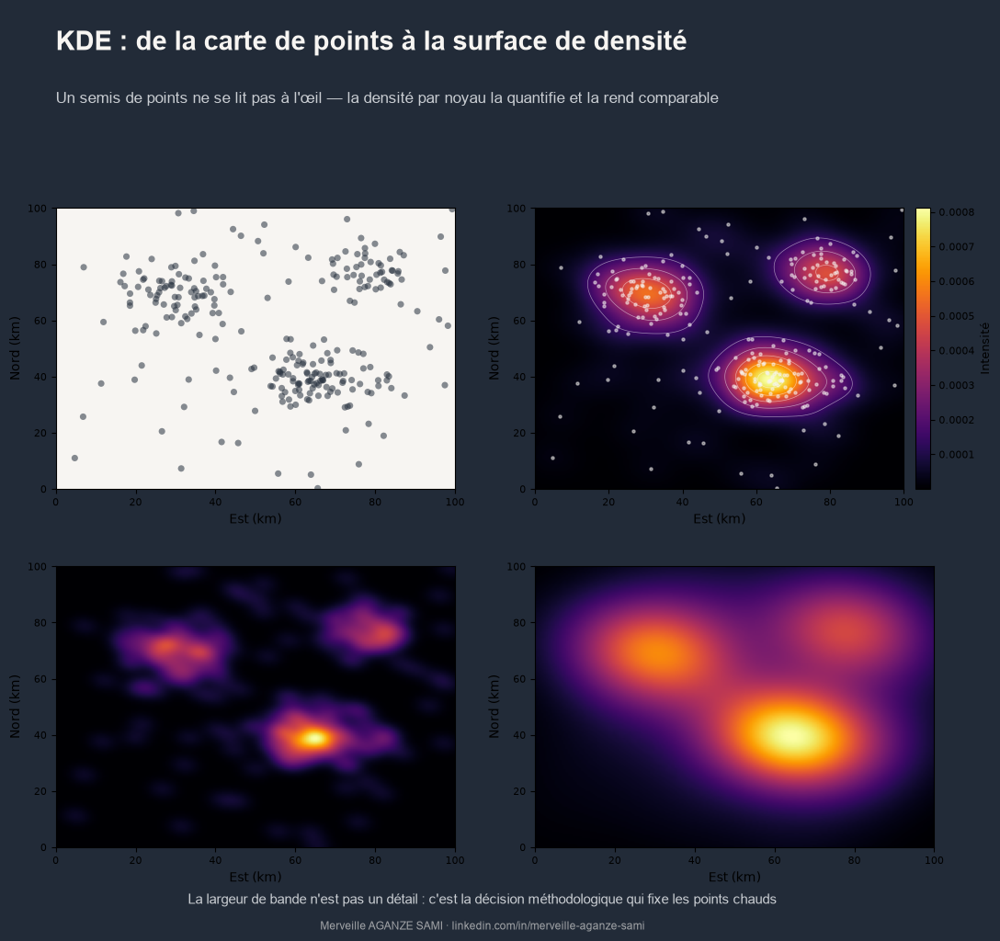

Representing geolocated events — incidents, complaints, beneficiary households, reported cases — frequently takes the form of a point pattern on a base map. This representation has a structural limitation: it delegates the estimation of concentration to visual perception, when concentration ought to be a matter of measurement.
Three biases compound this. Overlapping points conceal their own count. Densely populated areas dominate visually, regardless of the relative intensity of the phenomenon. And two readers examining the same map rarely identify the same clusters.
Kernel density estimation, developed within the framework of non-parametric density estimation (Rosenblatt, 1956) (Parzen, 1962), replaces this appraisal with a computed and reproducible quantity.
1. Principle
The method replaces each point observation with a weighting function — the kernel — centred on that point and decreasing with distance. Summing these contributions at every location produces a continuous surface whose value expresses an intensity, generally in events per unit area.
Two parameters define the estimate. The kernel shape (Gaussian, quartic, triangular) determines how influence decays; its effect on the result is moderate. Bandwidth, by contrast, strongly conditions the output: it sets the radius of influence of each observation (Silverman, 1986).
The decisive parameter. A narrow bandwidth produces a fragmented surface in which every isolated point appears as a cluster; a wide one smooths the structure to the point of erasing real concentrations. The choice of this parameter therefore determines the number and extent of identified hot spots — it is a methodological decision in its own right, not a display setting.
2. Choosing and justifying the bandwidth
Several approaches allow this choice to be grounded rather than left to the software default.
- Automatic rules. Estimators based on data dispersion provide an objective starting value; they nonetheless assume a near-normal distribution and tend to over-smooth multimodal patterns (Silverman, 1986).
- Cross-validation. Bandwidth is selected so as to optimise a goodness-of-fit criterion, providing explicit statistical justification (Diggle, 2013).
- Thematic criterion. Bandwidth may be set from a distance with operational meaning — the catchment radius of a health centre, an acceptable walking distance, the reach of an intervention zone. This approach is often the most defensible before a partner.
- Adaptive kernel. Where density varies strongly across space, a variable bandwidth, narrower in dense areas, improves the rendering of local structures.
3. Raw density or relative risk
A major caveat concerns interpretation. A raw density surface partly reflects the underlying population distribution: populated areas mechanically generate more events. Inferring priority need from high density then amounts to mapping demography.
Where the question concerns relative intensity — a rate rather than a volume — a ratio between case density and that of a reference population should be estimated. This relative-risk approach is formalised in the spatial epidemiology literature and applies equally to project data (Kelsall & Diggle, 1995).
4. Further limitations to document
- Edge effects. At the boundaries of the study area, part of the kernel extends outside the domain, underestimating density at the periphery. Corrections exist and should be applied where boundaries concentrate issues.
- Physical barriers. The kernel diffuses in Euclidean distance, disregarding rivers, terrain or administrative limits. For phenomena constrained by a network, network-based density is more appropriate.
- Temporal comparability. Two maps produced with different bandwidths or colour scales are not comparable. These parameters must be fixed for any longitudinal monitoring.
- No test. KDE describes an intensity but does not test the significance of a cluster. Where the question is whether a concentration exceeds what chance would explain, it must be complemented by a dedicated statistic.
5. Operational use
Properly parameterised and documented, the density surface turns an illustration into a targeting instrument. It delineates priority areas according to an explicit criterion, comparable from one period to another, whose construction can be reproduced by a third party — a condition for prioritisation that is defensible before a partner or donor.
Key points
- KDE replaces visual appraisal of a point pattern with a computed intensity
- Bandwidth is the determining parameter: it sets the number and extent of clusters
- A bandwidth based on an operational distance is often the most defensible
- Raw density partly reflects population: for a rate, estimate relative risk
- Fix bandwidth and colour scale for any comparative monitoring
A point pattern shows where events were recorded. A density surface shows where they concentrate. These two pieces of information do not call for the same decision.
References
- Diggle, P. J. (2013). Statistical Analysis of Spatial and Spatio-Temporal Point Patterns (3rd ed.). Boca Raton: CRC Press. doi.org/10.1201/b15326
- Kelsall, J. E., & Diggle, P. J. (1995). Kernel estimation of relative risk. Bernoulli, 1(1–2), 3–16. doi.org/10.2307/3318678
- Parzen, E. (1962). On Estimation of a Probability Density Function and Mode. The Annals of Mathematical Statistics, 33(3), 1065–1076. doi.org/10.1214/aoms/1177704472
- Rosenblatt, M. (1956). Remarks on Some Nonparametric Estimates of a Density Function. The Annals of Mathematical Statistics, 27(3), 832–837. doi.org/10.1214/aoms/1177728190
- Silverman, B. W. (1986). Density Estimation for Statistics and Data Analysis. London: Chapman & Hall. doi.org/10.1201/9781315140919

Merveille Aganze Sami
MEL & Database Management Advisor. 9+ years of experience in monitoring & evaluation, GIS and digitalization with international organizations (GIZ, Enabel) in DR Congo.
Geolocated field data to exploit?
Get in touch